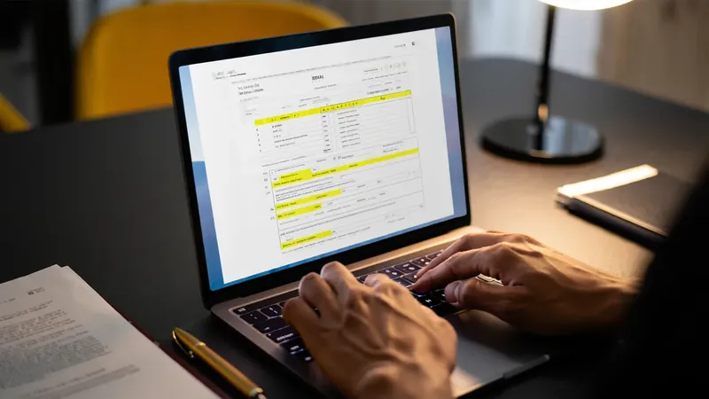

Declaración de Renta por Primera Vez: Guía Paso a Paso para Principiantes

Hacer tu declaración de renta por primera vez puede parecer un proceso complicado, pero con la información adecuada y el acompañamiento correcto es más sencillo de lo que imaginas. Aquí te guiamos paso a paso para que declares con seguridad y evites errores costosos.
¿Estás Seguro de que Debes Declarar?
Antes de empezar, verifica que efectivamente estás obligado a declarar. Debes presentar declaración de renta si durante el año gravable cumpliste al menos uno de estos criterios: patrimonio bruto superior a 4.500 UVT, ingresos brutos superiores a 1.400 UVT, consumos con tarjeta de crédito superiores a 1.400 UVT, consignaciones bancarias superiores a 1.400 UVT, o ser responsable del IVA.
Documentos que Necesitas Reunir
- Certificados de ingresos y retenciones: Si eres empleado, tu empleador debe entregártelo antes del 31 de marzo.
- Extractos bancarios: De todo el año gravable, de todas tus cuentas.
- Certificados de aportes: Salud, pensión, fondos voluntarios y AFC.
- Soportes de deducciones: Intereses de vivienda, educación, salud prepagada.
- Información de bienes: Inmuebles, vehículos, inversiones que poseas.
- Declaraciones anteriores: Si declaraste en años anteriores, tenlas a mano.
- Cédula de ciudadanía y RUT actualizado.
Paso a Paso para Declarar
- Verifica tu obligación: Confirma que realmente debes declarar según los topes del año gravable.
- Reúne los documentos: Junta todos los soportes listados arriba con tiempo.
- Activa tu firma electrónica: Si no la tienes, debes gestionarla ante la DIAN. Es indispensable para presentar la declaración.
- Ingresa al portal de la DIAN: Accede a www.dian.gov.co con tu usuario y contraseña.
- Selecciona el formulario 210: Es el que aplica para personas naturales residentes.
- Diligencia cada sección: Ingresos, patrimonio, deudas, deducciones y retenciones.
- Revisa antes de enviar: Verifica que todos los valores coincidan con tus soportes.
- Firma y presenta: Usa tu firma electrónica para enviar la declaración.
- Guarda el comprobante: Conserva el recibo de presentación como evidencia.
Errores Comunes que Debes Evitar
- No reportar todas tus cuentas bancarias e inversiones
- Olvidar incluir ingresos por arrendamientos u otras fuentes
- Aplicar deducciones sin los soportes adecuados
- No revisar que las retenciones reportadas coincidan con tus certificados
- Esperar al último día para presentar la declaración
- No guardar copia de la declaración presentada
¿Qué Formulario Debes Usar?
Las personas naturales residentes en Colombia utilizan el formulario 210. Si eres no residente fiscal, se utiliza el formulario 110. Tu contador te indicará cuál aplica según tu caso particular.
¿Primera vez declarando? No lo hagas solo
En Befrec y Asociados te acompañamos paso a paso en tu primera declaración de renta. Revisamos tu caso, preparamos tu declaración con todas las deducciones aplicables y la presentamos ante la DIAN con firma electrónica. Evita errores y sanciones.
Agendar Asesoría de RentaPreguntas Frecuentes
¿Cuánto tiempo tengo para declarar?
Los vencimientos van de agosto a octubre, dependiendo de los dos últimos dígitos de tu NIT.
¿Qué pasa si no tengo firma electrónica?
Debes gestionarla ante la DIAN antes de presentar tu declaración. En Befrec te ayudamos con ese trámite.
¿Puedo declarar renta así no esté obligado?
Sí, puedes presentar una declaración voluntaria. Es útil para demostrar ingresos ante bancos o entidades.
¿Cuánto cuesta que me ayuden con la declaración?
El costo varía según la complejidad de tu caso. En Befrec ofrecemos una primera revisión sin costo para evaluar tu situación.